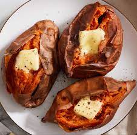

Baked Sweet Potato

Description
Nutritious and delicious baked sweet potato perfect for any family!
Ingredients
- 4 medium sweet potatoes
- salt
- butter
- brown sugar
Steps
- Preheat oven to 400 degrees
- Wash sweet potatoes
- Poke holes with fork to allow internal ventilation
- Bake for 1 hour or until desired tenderness
- Remove from oven, cut the potato skin across the top
- Add butter and other ingredients as toppings, enjoy!